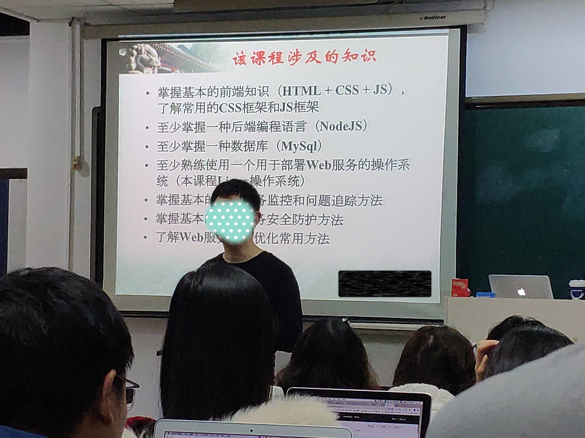
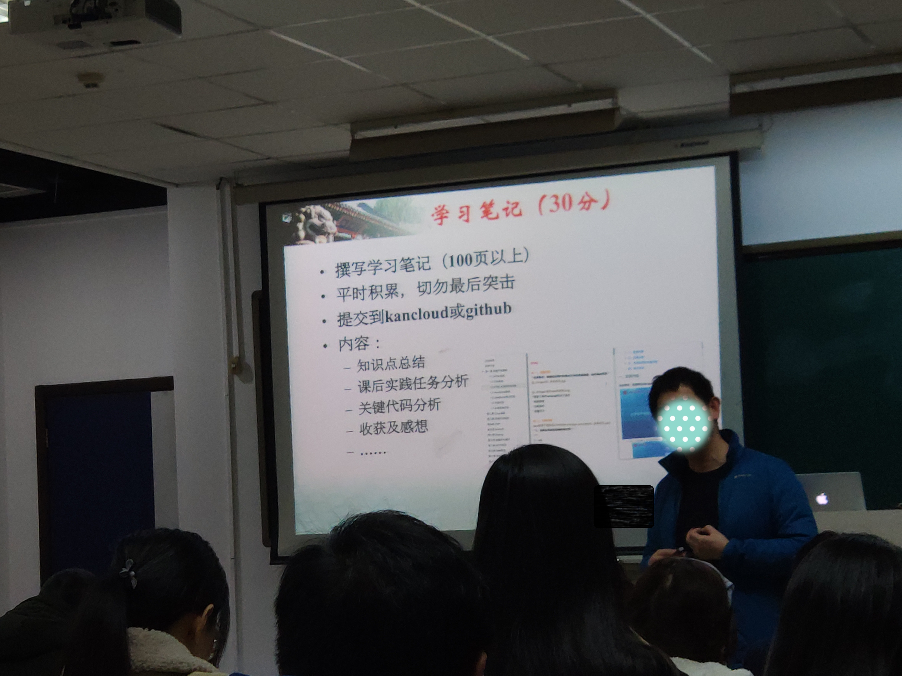
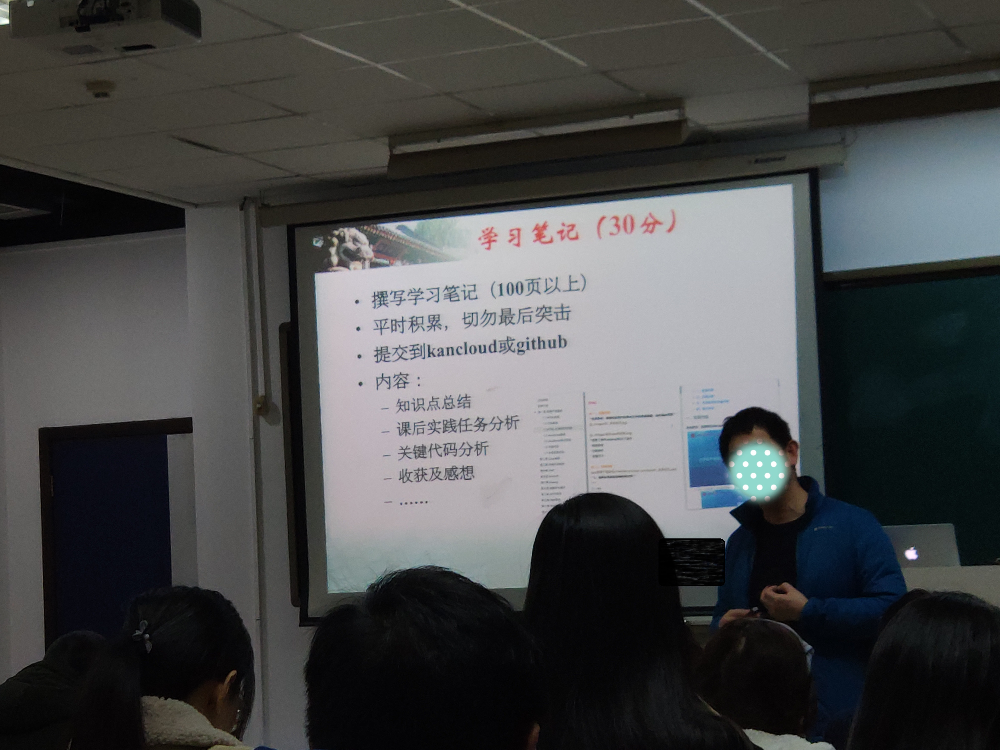
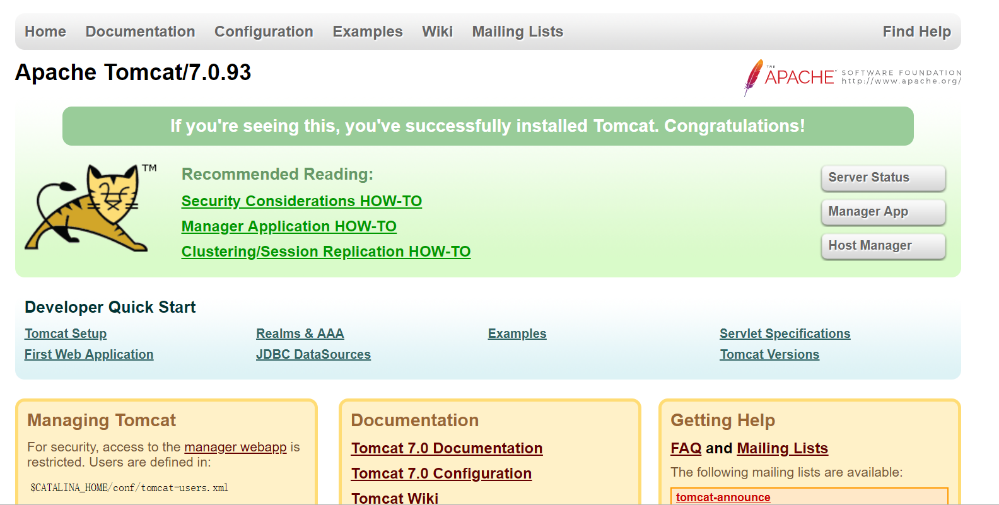
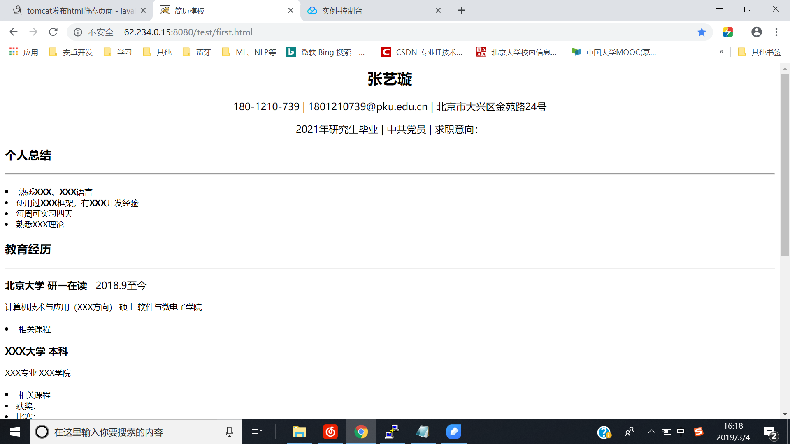
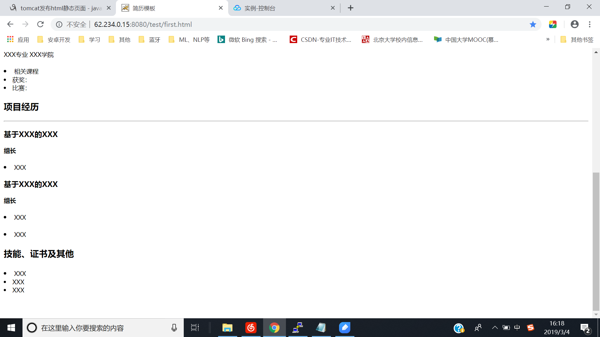
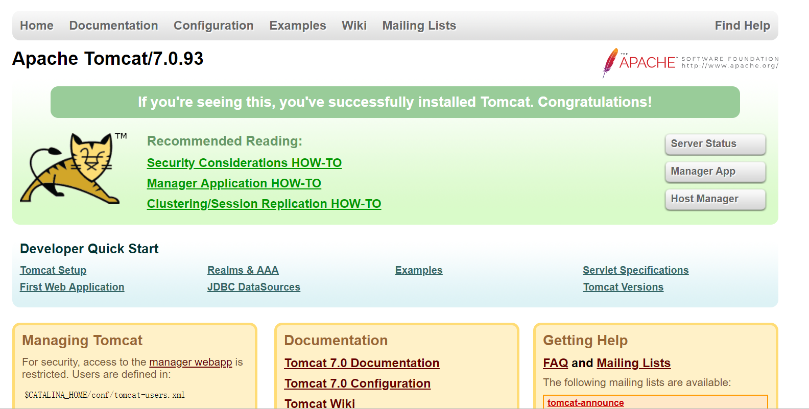
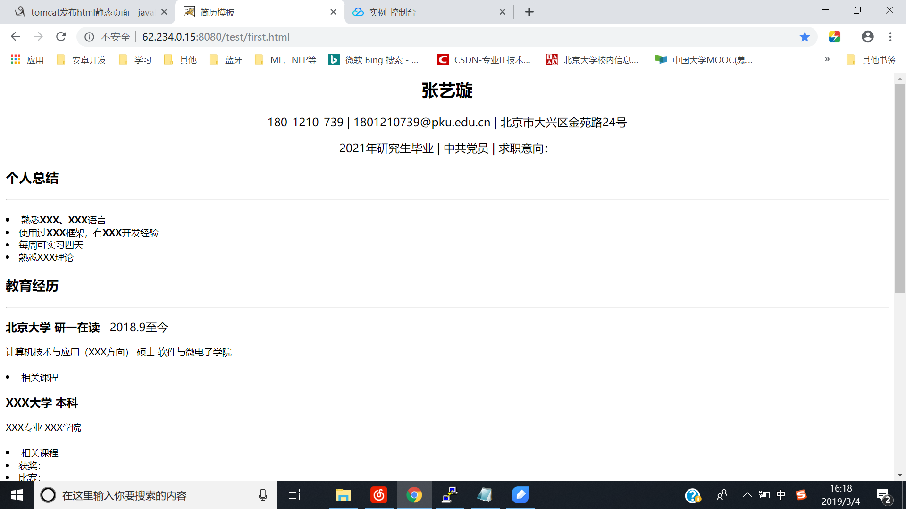
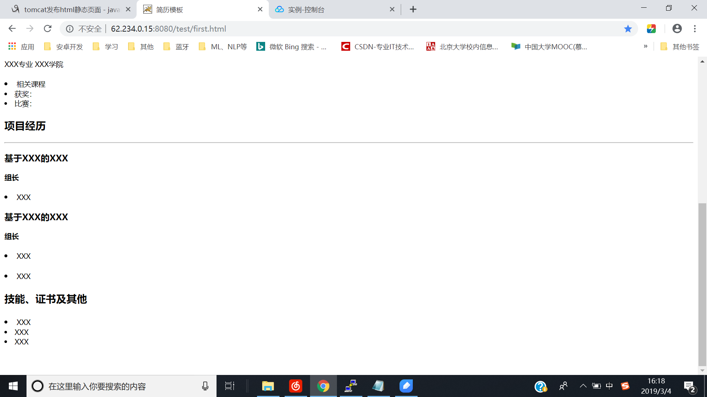

如何让html现实在互联网上显示 1、买服务器/云主机（有一个公网ip），有cpu，硬盘，ip地址等。 2、接下来装操作系统 3、写一个html文件 4、把文件上传到服务器上 5、装web服务器，如windows里有iis，微软自带，linux的apach服务器。配置服务器的配置文件，确定工作目录，将文件放在工作目录里 6、用浏览器访问服务器的ip地址/+html文件名 作业：个人web页面15个标签 发的文档练习,登录页面 总结报告。传到linux上去 安装软件让人访问

 

 




